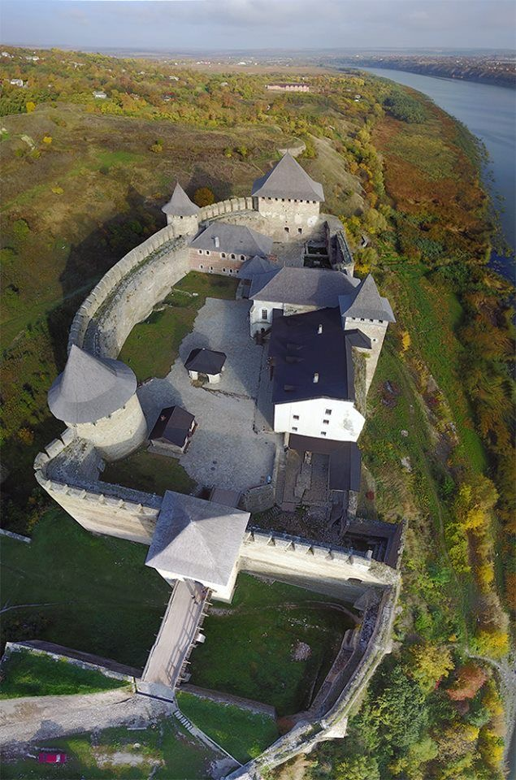
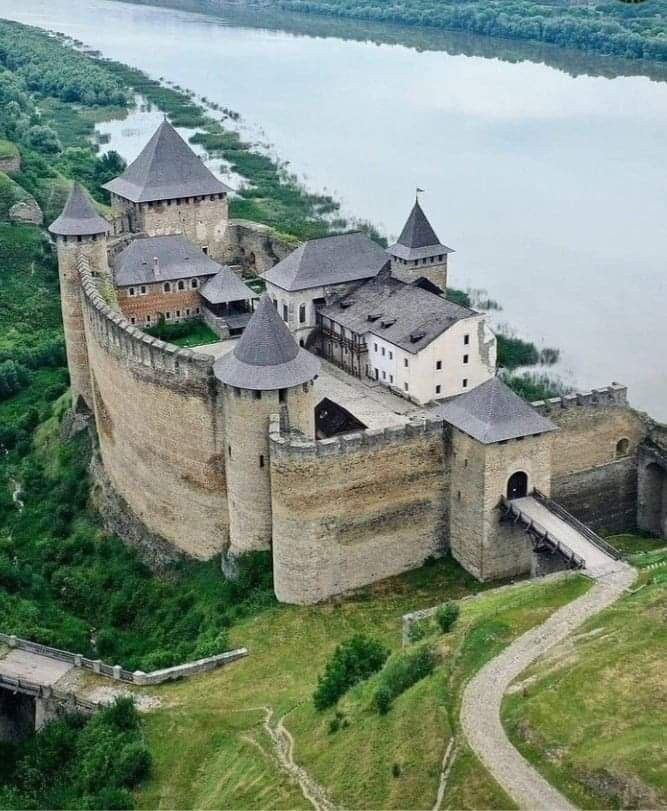

Хотинська фортеця є однією з найбільш вражаючих історичних пам'яток України, що розташована на березі Дністра в Чернівецькій області. Її велична архітектура, стратегічне значення і багатовікова історія роблять її справжнім чудом, яке привертає увагу туристів з усього світу. Фортеця була зведена в X столітті за часів Київської Русі і спочатку мала дерев'яну конструкцію. Її розташування було вибране не випадково: високий берег Дністра забезпечував природний захист, а також дозволяв контролювати торговельні шляхи, що пролягали річкою. Пізніше, у XIV столітті, молдовський князь Штефан III Великий перетворив Хотин на кам'яну твердиню, яка збереглася до сьогодні.
Хотинська фортеця вважається чудом України завдяки своїй архітектурі. Її масивні стіни, заввишки 40 метрів і товщиною 5 метрів, здаються неприступними. Фортеця має прямокутну форму з чотирма вежами по кутах, що забезпечувало кругову оборону. Унікальні елементи архітектури, такі як орнаментальні стрічки на стінах і майстерне з’єднання каменю, створюють враження гармонії та витонченості, незважаючи на її оборонний характер. Протягом століть Хотинська фортеця відігравала важливу роль в історії України та Європи. Вона була свідком багатьох битв, зокрема знаменитої Хотинської битви 1621 року, яка стала переломним моментом в боротьбі Речі Посполитої та Османської імперії. У цій битві об'єднані війська козаків і поляків під проводом Петра Сагайдачного зупинили наступ османів, захистивши не лише Україну, але й усю Європу від османського завоювання. Ця подія зробила фортецю символом мужності й єдності.
Крім своєї військової історії, Хотинська фортеця є джерелом культурного та духовного багатства. Її територія служила місцем торгівлі, дипломатичних переговорів і релігійних обрядів. Відвідувачі фортеці можуть побачити залишки стародавньої церкви, яка свого часу була центром духовного життя регіону. Важливість Хотинської фортеці для України важко переоцінити. Вона не лише нагадує про героїчні сторінки минулого, а й символізує силу, витривалість і прагнення до свободи. Її збереження є пріоритетом для сучасного покоління, адже фортеця є частиною національної ідентичності.
Хотинська фортеця входить до списку "Семи чудес України" завдяки своїй історичній, культурній і архітектурній значущості. Її краса і велич вражають навіть тих, хто багато подорожував. Відвідування фортеці залишає незабутні враження, а також дає змогу краще зрозуміти історію нашої країни та її місце в європейській цивілізації.
Сьогодні Хотинська фортеця є не лише історичною пам'яткою, а й сучасним культурним центром. Тут проводяться фестивалі, реконструкції історичних битв, а також знімаються фільми. Її величний вигляд надихає митців, письменників і кінематографістів, які використовують фортецю як джерело творчості. Наприклад, тут знімали сцени до таких відомих фільмів, як "Тарас Бульба" і "Три мушкетери".